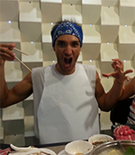
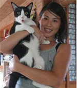

按這裡報名!
有任何問題歡迎寄Email給我們！
在醉悟空，我們提供營業用配備的專業器材大廚房讓您體驗在台灣最常享用到的各式料理，包括道地的台式熱炒，港式點心，以及各式台灣小吃。無論您是從沒有進過廚房的新手或是燒得一手好菜的老手，我們都有不同程度不同主題的體驗活動等您來試試手藝，給自己一個驚喜，體驗在專業廚房下廚的樂趣!
師資介紹!
主廚
Alex Holliday
我是醉悟空的主廚，從加拿大旅居來台灣約莫已經十個年頭，在四年前開了醉悟空。曾經在中式，台式，以及港式的餐廳工作，非常期待有機會將我工作的經驗分享給大家！
- Vancouver Coastal Health食物安全一級檢定
- VCC亞洲烹飪藝術課程檢定
- 專長台式熱炒
老闆
Annie Hsu
在餐旅產業工作有六年的經驗，專長在研究酥脆美味的油炸食物，醉悟空的經典招牌格鬥炸香蕉就是我的得意作品。在咖啡廳的工作中也深究甜點烘培。
- 醉悟空總管兼油炸手
- 曾任孫運璿科技人文紀念館藝文小客廳店長兼烘焙手